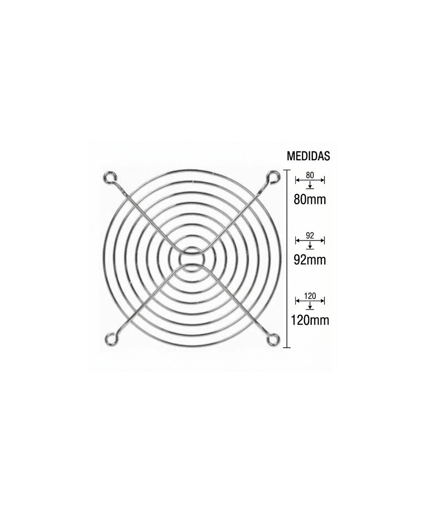
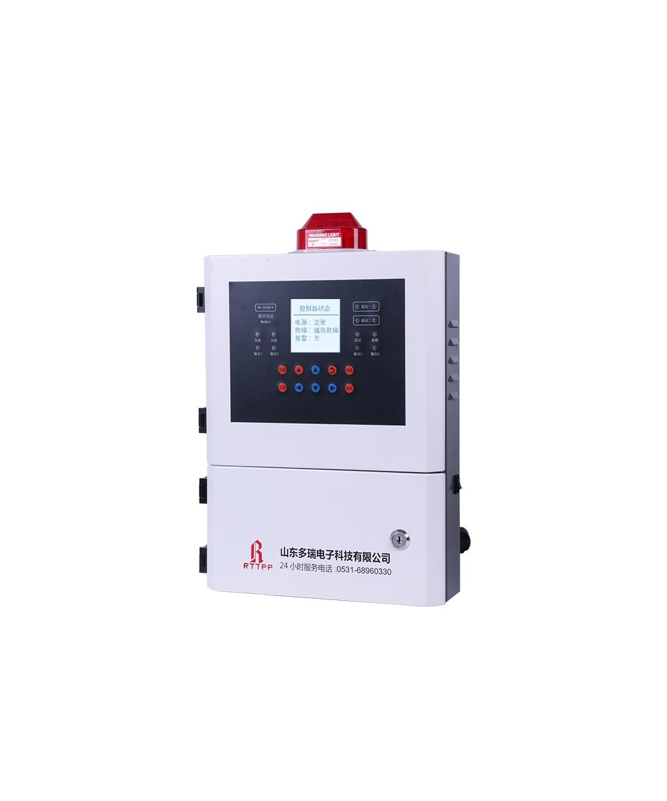
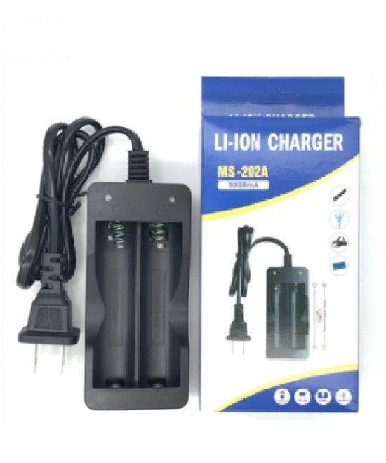
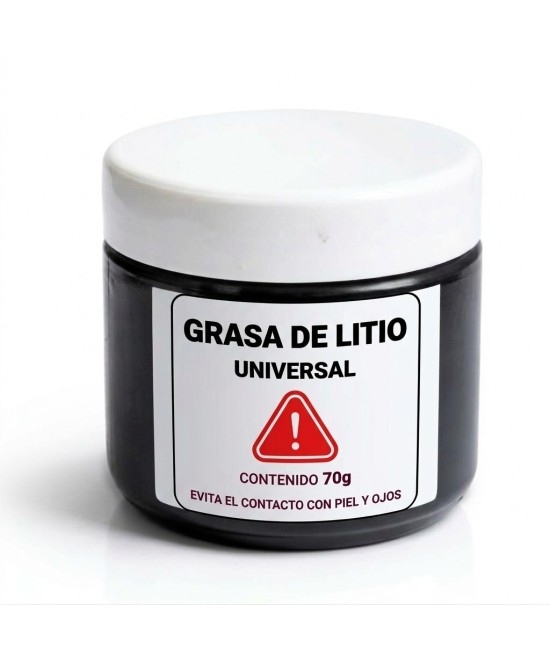
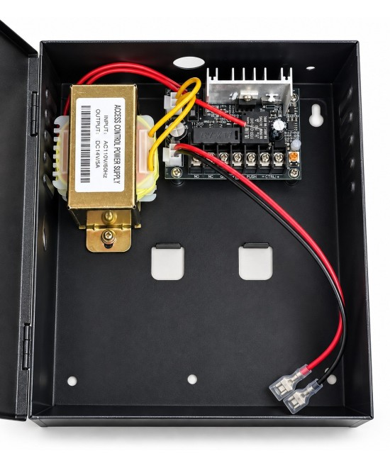
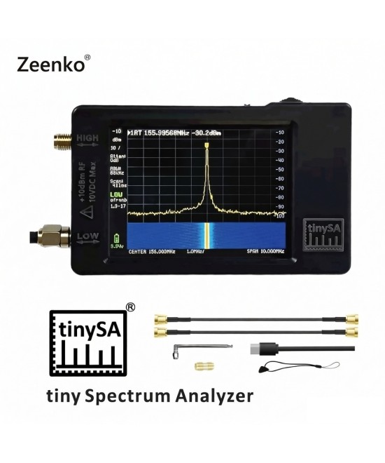
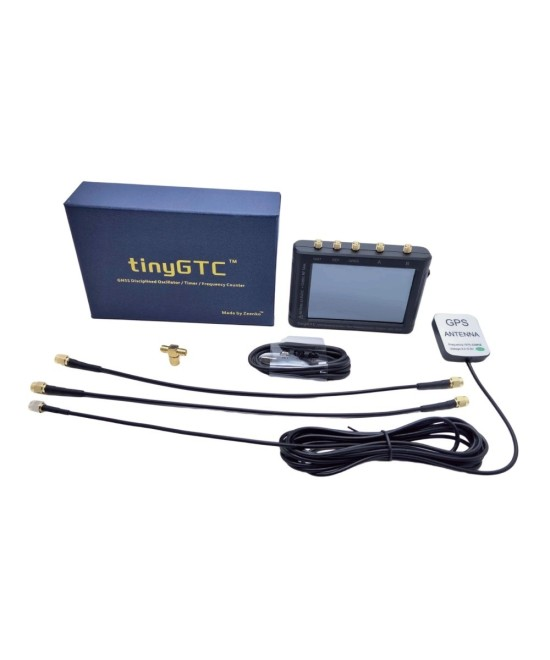

Fuente de alimentacion variable 60V 5A DPS605U WANPTEK
L. 2,900.00L. 3,400.00
Descripcion
Dispositivo que proporciona una corriente eléctrica regulable con valores ajustables.
Estas fuentes permiten controlar la tensión y corriente de salida, lo que resulta útil
en experimentos, pruebas y desarrollo de circuitos electrónicos, ya que se pueden ajustar
para cumplir con los requisitos específicos de los componentes o dispositivos en cuestión.
Características
Modelo: DPS605U
Voltaje de salida: 0-60 V para 605U.
Corriente de salida: 0-5 A para 605U.
Potencia de salida: 300 W para 605U.
Salida adicional: USB Quick Chang 18 W, admite varios protocolos de carga rápida.
Voltaje de entrada: CA 220 V, 50 Hz.
Temperatura de funcionamiento: 0-40 ℃; Humedad: 80% RH.
Almacenamiento TEMP -10 – 70 ℃; Humedad: <70% RF.
C.V: Estabilidad de voltaje ≤ 0,1% + 3mV; Estabilidad de carga ≤ 0,1% + 3mV; Ruido de onda: ≤ 20 mvrms (valor efectivo).
C.C. Modo de protección: limitación de corriente, salida de alarma de cortocircuito y autorecuperación.
Pantalla: tubo digital de cuatro dígitos, pantalla de tres ventanas.
Precisión: 0. 5% + 3 digital.
Resolución: tensión 0,01 V; corriente 0,001 A.
Tamaño del producto: 225 x 90 x 145 mm.
Peso: 1,8 kg.
Fusible: 3A para DPS605U

Rejillas Metalicas 80/92/120MM
L. 30.00
Descripcion
En stock 7 Artículos

Panel de control de gas industrial de 25 canales con entrada RS485, pantalla LCD y controlador de alarma SDDORE
L. 11,500.00
Características Capacidad del sistema: Soporta configuraciones de buses que permiten conectar y gestionar canales para múltiples detectores (comúnmente escalable hasta 99 canales utilizando protocolos como RS485).
Indicadores integrados: Dispone de una pantalla central que muestra las concentraciones de gas en tiempo real, luces indicadoras de estado y una baliza de alarma sonora y luminosa de color rojo en la parte superior para alertar de forma visual e inmediata ante cualquier fuga o anomalía detectada en el perímetro
Capacidad del Sistema: Configurable para 25, 50 o hasta 99 canales independientes de comunicación.
Señal de Entrada (Conexión de sondas): Protocolo digital RS485 direccionable (permite conectar hasta 120 sondas en bus de larga distancia).
Señal de Salida (Automatización): Salida digital RS485 y salidas de relé independientes para activar extractores, electroválvulas de corte o sirenas externas.
Gases Compatibles: Gases combustibles (LEL), gases tóxicos (CO, H₂S, NH₃, Cl₂), Oxígeno (O₂) y Dióxido de carbono (CO₂).
Almacenamiento Interno: Registro automático de hasta 1050 eventos e historial de alarmas con fecha y hora.
Alimentación: 220V AC.
Certificaciones Internacionales: Cuenta con certificaciones CE, ATEX (seguridad a prueba de explosión) y SIL (Confiabilidad de Seguridad Funcional).

Cargador doble de baterías de litio 18650 4.2V 1000mAh MS-202A
L. 200.00
Descripcion
Es un cargador doble universal diseñado para recargar dos baterías de litio de 3.7V al mismo
tiempo. Es compatible con 18650, Proporciona una carga segura, estable y protegida para
diferentes dispositivos que utilizan este tipo de celdas.
Características
Compatibilidad: 18650
Voltaje de salida: 4.2V (carga para baterías de 3.7V)
Corriente de carga: 1000mAh por ranura
Ranuras independientes: Cada batería se carga por separado
Entrada de energía: AC 100-240V (según modelo)
Indicadores LED: Muestran estado de carga (cargando/completa)
Protecciones: Contra sobrecarga, sobrecorriente, polaridad inversa y cortocircuito
Apagado automático: Detiene la carga al completarse
Uso: Ideal para linternas, dispositivos electrónicos, herramientas y accesorios que usan baterías 3.7V

Grasa de litio universal 70g
L. 100.00
Grasa multiusos de uso general a base de aceites minerales altamente refinados con Espesante a
base de jabón de litio y adición de ésteres sintéticos, aditivos especiales antioxidantes y
anticorrosivos.
Propiedades:
La presencia de ésteres sintéticos aumenta significativamente las propiedades antidesgaste,antiadherente y antifricción de la grasa;
Mantiene sus propiedades de rendimiento desde -30 °C hasta +120 °C, lo que aumenta la vida útil de los rodamientos;
Tiene buena resistencia al agua;
Protege de forma fiable contra la corrosión en entornos sucios durante largos periodos de tiempo.
Excelente estabilidad mecánica y a la oxidación;
Rodamientos de rodillos y correderas de alta velocidad;
Cojinetes de motores eléctricos y generadores eléctricos, bombas, etc.;
Unidades de cojinetes cerrados con lubricación de por vida;
Desarrollado para su uso en todo tipo de maquinaria móvil, así como para aplicaciones generales.
Aplicaciones industriales.
Bateria de acido 6V 2.5Ah LONG
L. 500.00
Voltaje nominal: 6V
Capacidad: 2.5Ah
Corriente inicial máxima: 0.75A
Uso cíclico (Cycle use): 7.20V - 7.50V
Uso en espera (Standby use): 6.75V - 6.90V

Fuente de poder Skylink Respaldo y acceso SK-902C
L. 1,280.00
Capacidad: 5 Amperios a 12 Voltios.
Funciones: 2 relés con timer (0.7 Seg).
Protección: Contra cortocircuitos y salidas protegidas por fusible.
Diseño: Recinto o gabinete metálico robusto para interior
Puede ser utilizado para la materia textil, producción de papel, sala de ordenadores, electrónico. pulverización, plástico, energía de fuego, impresión, laboratorio, tabaco, ventilación de calefacción, mantenimiento y almacenamiento fresco, alimentos, ganadería, escena artificial, etc. Ideal para funcionar en invernadero, supermercado, almacén, instalaciones y muchas otras industrias, mantiene frutas y verduras frescas, garantiza un ambiente de humedad para plantas en crecimiento
Atomización ultrasónica del humidificador industrial, módulo integrado interno de la atomización, ninguna impulsión mecánica, ningún ruido, eficacia del atomizatior alta, tasa de fracaso bajo, mantenimiento simple, toda la salida de diámetro de la partícula de la niebla de 1 a 10u, humedad relativa máxima del 99%.
Productos que utilizan diseño integrado móvil, carcasa de acero de alta calidad; reposición automática, sistema de control automático de humedad digital, la precisión de control de ± 3%.
La calidad del agua utilizada por toda la máquina debe ser: agua ablandada, agua purificada o agua fría y limpia. La temperatura del agua de uso y el ambiente de uso no deben exceder los 104.0 °F.
Volumen de niebla: ≥ 6.6 lbs/h, Humedad: 1%-99%, Fuente de alimentación: 110 V, Potencia: 350 W, Método de control: control de humedad, Espacio aplicable: 215.3-538.2 ft² (200-500 pies cuadrados), agujero: 4.3 pulgadas* 1, calidad del suministro de agua: agua purificada, agua del grifo (ablandada), material: acero inoxidable, volumen de aire: 160 m³ /h

Analizador de espectro portátil TinySA de 10 kHz a 960 MHz Zeenko
L. 2,900.00
Rango de frecuencia: analizador de espectro pequeño con dos entradas, entrada MF/HF/VHF de alta calidad para 0.1MHZ-350MHz, entrada UHF de menor calidad para 240MHz-960MHz. Filtros de paso de banda de resolución conmutable para ambos rangos entre 2,6 kHz y 640 kHz. Pantalla a color que muestra 290 puntos de escaneo que cubre hasta el rango completo de baja o alta frecuencia. El tinySA contiene todos los componentes de un analizador de espectro barrido heterodino convencional
Generador de señal de calibración incorporado: cuando no se utiliza como analizador de espectro, se puede utilizar como generador de señal, salida sinusal MF/HF/VHF entre 0.1MHZ-350MHz, salida de onda cuadrada UHF entre 240MHz-960MHz. Generador de señal de calibración incorporado que se utiliza para la autoprueba automática y la calibración de entrada baja
Analizadores de espectro pequeño y función ESD: filtros de paso de banda de resolución conmutables para ambos rangos entre 2.6kHz y 640kHz. Pantalla a color que muestra 290 puntos de escaneo que cubren hasta el rango de frecuencia baja o alta completo. Batería recargable incorporada que permite un mínimo de al menos 2 horas de uso portátil. El rendimiento de la última versión 3.1 de 2021 será más estable y sensible, con una nueva función protegida contra ESD que permite que el producto tenga un nivel antiestático más alto y una vida útil más larga
Control por PC: Conectado a un PC a través de USB se convierte en un analizador de espectro controlado por PC. La interfaz USB implementa el protocolo Serial sobre USB (CDC) y hay un gran conjunto de comandos que se pueden invocar a través de la interfaz serial. Estos comandos se pueden utilizar para realizar mediciones o actualizar la configuración interna. El controlador para Windows se instalará automáticamente después de conectarse a una PC con Windows. El controlador para Linux está integrado en el kernel

Contador de frecuencia TinyGTC ZC407 de 7 GHz Zeenko
L. 7,500.00
Seesii TinyGTC ZC412 Contador de Frecuencia Portátil: Un dispositivo rentable con un rango de frecuencia ultra amplio de 0.1 Hz—12.8 GHz, que ofrece datos precisos para el desarrollo de RF y calibración de frecuencia. Cuenta con un oscilador disciplinado GNSS/GPS incorporado para la precisión de medición, y está equipado con una pantalla táctil HD de 4.0 pulgadas y una ranura para tarjeta Micro SD que admite hasta 32GB para el manejo y almacenamiento de datos de proceso completo
Cobertura de Frecuencia Amplia: El Temporizador/Contador Dual de Frecuencia ofrece un impresionante rango de frecuencia de 0,1 Hz a 12,8 GHz, abarcando frecuencias tanto ultra bajas como altas. Mide con precisión las señales de ultra-baja frecuencia y de audio a partir de 0,1 Hz, mientras que la banda de 7 GHz admite comunicaciones inalámbricas convencionales. Con su amplia cobertura y versatilidad, esta única unidad maneja diversas necesidades de pruebas de banda completa
Medición de doble canal: el dispositivo está equipado con dos canales de entrada independientes (A y B) para medición y comparación simultáneas, mejorando la eficiencia de la prueba y reduciendo errores. El canal A admite 0.1Hz–350MHz, extensible a 7GHz/12GHz con un prescaler de GHz. El Canal B es idéntico al Canal A, excepto que no incluye la función de preselector de GHz. Ideal para la resolución de problemas de interferencia, medición de ganancia de amplificadores, pruebas de laboratorio y de campo
Precisión ultra alta: el TinyGTC cuenta con dos contadores/temporizadores independientes con resolución de 40 ps, lo que permite mediciones de tiempo, frecuencia y fase sin interrupciones. El conteo recíproco avanzado y la estabilidad ADEV ofrecen una precisión independiente de la frecuencia de 1e-11~1e-12 por segundo, proporcionando precisión de grado laboratorio para investigación, desarrollo y pruebas en aplicaciones de TDR, pulso y estabilidad a largo plazo
Reloj interno sincronizado con GPS: El TinyGTC incorpora un GNSS/GPSDO incorporado que se sincroniza con el GPS UTC para una calibración continua y alta precisión a largo plazo. Su oscilador disciplinado ofrece frecuencias estables de 8 kHz a 150 MHz como fuente de reloj y acepta referencias externas, incluidos relojes atómicos, para utilizar completamente su resolución de 12 bits, diseñada para la sincronización de precisión en pruebas de estaciones base de comunicaciones, redes de sensores distribuidos e investigación de campo
Batería integrada de 4000mAh: Ofrece hasta 5 horas de funcionamiento continuo con una sola carga, satisfaciendo las demandas de la mayoría de los escenarios de prueba. El puerto USB-C permite una cómoda carga y conectividad de datos
Conveniente control de PC y transferencia de datos: este temporizador/contador dual de frecuencia admite visualización y transmisión de datos en tiempo real. El puerto USB integrado permite el control remoto y el acceso directo a los datos de medición a través de dispositivos conectados, y es compatible con tarjetas MicroSD de hasta 32 GB para un almacenamiento y uso compartido de datos eficientes, satisfaciendo las necesidades de escaneo de espectro, detección de señal y medición de ruido de radio